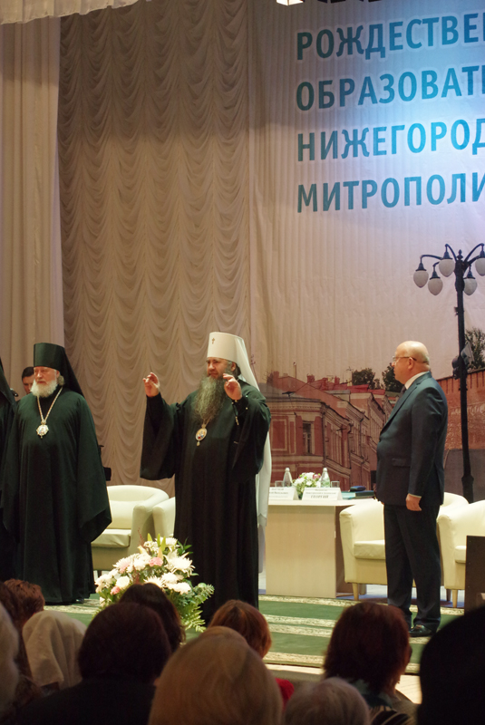

ВЕДОМОСТИ
НИЖЕГОРОДСКИЙ МИТРОПОЛИИ
ИЗДАЕТСЯ ПО БЛАГОСЛОВЕНИЮ МИТРОПОЛИТА НИЖЕГОРОДСКОГО И АРЗАМАССКОГО ГЕОРГИЯ
18(78) сентябрь 2015
СОБЫТИЕ

22 сентября в Нижегородский митрополии состоялось открытие X Рождественскиих образовательных чтений "Традиция и новации: культура, общество, личность"
Участников церемонии приветсвовали митрополит Георгий, губернатор Валерий Шанцев и Преосвященные архиерие Нижегородской митрополии. Вниманию гостей были предложены фильм о взаимодействии Церкви и власти Нижегородской обрасти и праздничный концерт.
Рождественские чтения - удобная прощадка для диалога, где государственные органы, общество и Церковь конствуктивно обсуждают единые для всх проблемы. В числе мероприятий форума в 2015 году - парламентские и педагогические чтения, конференции и семинары, рождественские елки для детей, конкурсы.
X Рождественские чтения в Нижегородской митрополии предшествуют международному этапу и будут проходить до 22 января 2016 года.
Стр.4
АНОНС
8 ноября в 15 часов в нижегородском храме в честь святителя и чудотворца Николая (улица Дьяконова, 15 а) состоится сергиевский детский хоровой собор.
Мероприятие организуется отделом культуры Нидегородской еперхии при содействии департаменда культуры Нижнего Новгорода по брагословению митрополита Нижегородского и Арзамаевского Георгия в рамках реализации программы "Под духовным покровом преподобного Сергия."
В творческом смотре примут участие детские хоровые коллективы православных культурных учреждений города Нижнего Новгорода и Нижегородской области. Возглавит мероприятие правящий епархий